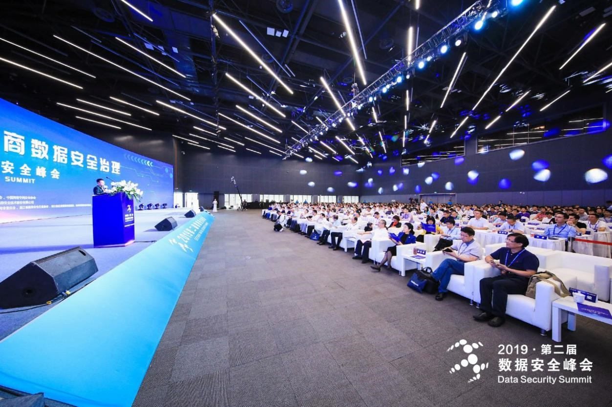

2018年中国软件行业发展现状分析
2018-03-07 02:58:35
（一）行业市场概况
1．软件行业总体发展情况
软件产业是国家战略性新兴产业，是国民经济和社会信息化的重要基础。2008 年至 2015 年间，中国软件行业市场总量保持快速增长的趋势，软件行业业务收入从 2008 年的 7,572.88 亿元增长到 2015 年的 42,847.92 亿元，年复合增长率为 28.09%。 2009 年软件行业收入为 9,513.03 亿元，同比增长 25.62%。
2010年、 2011 年和 2012 年软件行业收入分别为 13,364.02 亿元、 18,467.93 亿元和25,022.34 亿元，同比增长分别为 40.48%、 38.19%和 35.49%，为软件行业的高速增长期。 2013 年至 2015 年，软件行业收入为 30,587.47 亿元、 37,026.42 亿元和42,847.92 亿元，同比增长分别为 22.24%、 21.05%和 15.72%。
福建省的软件行业发展较好， 2015 年软件业务收入为 1,827.17 亿元， 2008年至 2015 年的年复合增长率为 36.08%。
随着新一代信息技术加速渗透到经济和社会生活的各个领域， 软件产业呈现出网络化、服务化、平台化、融合化新趋势。目前，新一代信息技术正在转向软件主导，软件在信息产业中的贡献不断增加。《中国制造 2025》、《积极推进“互联网+”行动的指导意见》和《加快推进网络信息技术自主创新》等国策的深入推进和落实，将会对产业变革产生深远影响，国民经济各个领域对软件产业的需求将更加强劲，尤其是对操作系统、数据库等基础软件、行业应用软件、大数据软件产生更高、更广泛的需求。“互联网+”所形成的大众创业、万众创新以及国民经济各个领域对大数据、云计算、物联网和数据传输、获取、存储、信息安全的巨大需求都建立在强大的基础信息平台之上，拥有强大的基础信息平台，“互联网+”的能量才能充分发挥出来。
（1）智慧应急解决方案的市场需求情况
1）应急平台的发展状况
最近几十年来，我国经济进入高速发展阶段，但是随之而来的是城市的一些潜伏灾害的增加，另外由于环境的污染也会带来一些难以预料及估计的危害，这给人民的和谐生活带来了相当大的灾难，同时也使城市发展的速度变得缓慢。为了有效地预防、预测该地区可能会发生的各种突发公共事件，并最及时、最全面和最稳妥地解决问题，从而减少事件带来的损失和负面影响，各级政府部门和相关单位组织均开始建设部门和区域的应急平台。应急平台由应急管理软件、应急指挥场所与装备、基础支撑系统等子系统组成。应急平台是一个针对公共突发事件的综合应急管理系统，是以公共安全技术和信息技术为支撑，软硬件相结合的突发公共事件应急保障技术系统。应急平台作为整个应急体系的中枢， 是高度智能化的指挥系统， 具有以下三个方面的功能：①公共安全信息的“汇集点”，能在大量突发事件中快速有效地整合、分析、提取城市危险源和突发事件现场的信息；②应对突发事件的“智能库”，提供不同条件下突发事件的科学动态预测与危险性分析，判断预警级别并快速发布预警；③应急指挥决策的“控制台”，进行预案优化、决策调度和救援处置。
我国应急平台体系以国家级应急平台为顶层，以省级、市（地）级、县（区）级应急平台，以及各级政府部门应急平台为节点，实现对突发事件的监测监控、预测预警、信息报告、综合研判、辅助决策、指挥调度等主要功能，满足国家和本地区、本部门应急管理工作的需要。2007 年 8 月，我国颁布了《中华人民共和国突发事件应对法》（主席令第 69号），我国突发事件的预防与应急准备、监测与预警、应急处置与救援、事后恢复与重建等应对活动有了专门的法律保障。此后，我国逐渐建立健全了突发事件应急预案体系，完善了突发事件事后应急处理措施，并且国务院建立了全国统一的突发事件信息系统。目前，国家层面的应急管理体系及相关配套的设施和设备已逐步构建完成，但部门和区域的应急管理还处于初步阶段。因此，在“十三五”期间，国家发展改革委员会编制的“‘十三五’应急体系建设规划”中进一步提出要加强应急体系顶层设计研究、加强应急管理体制研究、 加强应急管理法治化研究、 加强应急管理法治实施体系建设。 按照国家规划，拟在“十三五”期间将应急平台节点拓展至县级系统，建立必要的移动应急指挥平台，以实现对各级各类突发公共事件应急管理的统一协调指挥，实现公共安全应急数据及时准确、信息资源共享、指挥决策高效。
2）智慧应急解决方案的需求分析
在自然灾害面前，由于中国缺乏迅速有效的应急处理，所遭受的损失远高于发达国家。从 2007 年至 2016 年的统计数据来看，在因自然灾害所造成的直接经济损失方面， 2008 年为近几年的最高值，直接经济损失达 11,752.4 亿元； 2007年为最低值，直接经济损失为 2,363 亿元； 2010 年和 2013 年的直接经济失较高，分别为 5,339.9 亿元和 5,808.4 亿元。在受灾人次方面，我国每年的受灾人次虽然总体呈下降的趋势，但受灾人次在 2015 年仍然有 1.9 亿，这一方面得益于我国近几年防灾减灾工作不断完善， 另一方面也是因为近几年重大自然灾害发生的严重程度有所降低、次数有所减少。 2016 年 7 月发生特大洪水，因自然灾害所造成的死亡失踪人口、紧急转移安置人口、倒塌房屋和直接经济损失均比前几年同期多 1 倍以上。因此，从较长的一段时间来看，我国在防灾减灾工作上的任务仍然很艰巨，各级政府对灾害应急仍然有很大的需求。
2007 年至 2016 年我国自然灾害情况
数据来源：公开资料整理
除了自然灾害领域外，社会安全、公共卫生、非自然类事故等引起的突发事件也具有很大的危害性，能否有效应对公共突发事件，成为城市经济发展势头走向良性轨道的重要条件，尤其是对于希望改变依赖于自然资源的粗放发展模式、实现经济发展转型的地区，建立健全完备的应急体制和机制，是实现经济转型，提升经济发展水平的直接需要。然而相对于国家层面的应急系统，目前我国省市级的应急系统以及部门的应急系统建设都还比较滞后。
智慧应急解决方案是涵盖应急指挥场所系统、 基础支撑系统与综合应用系统等多个层面的综合性应急指挥解决方案，针对自然灾害、社会安全、公共卫生、非自然类事故等能够及时有效地预警、预防、检测、防护和应急处置各种突发事件、事故和灾害，防灾减灾，保证人民生命健康安全，避免国家、企业和家庭财产损失。
在智慧城市建设的背景下，应急管理的技术支撑体系的发展趋势主要包括：信息化的应急联动响应系统、物联网化的应急事态监测系统、事故后果智能预测与模拟系统和应急响应专家系统等。因此， 省市级与部门的应急平台需要依托“物联网”、“大数据”和“云计算”技术向智慧化和智能化演进和升级，同时在网格化城市运营模式的驱动下，灾害和事故的应急任务将逐渐下放到社区和网格单元， 这些发展需求为“智慧应急”的行业推广和区域扩展提供了巨大的市场机遇。2014 年 12 月，国务院办公厅发布《国务院办公厅关于加快应急产业发展的意见》，提出到 2020 年，应急产业规模显著扩大，应急产业体系基本形成；自主创新能力进一步增强，一批关键技术和装备的研发制造能力达到国际先进水平；发展环境进一步优化，形成有利于产业发展的创新机制，为防范和处置突发事件提供有力支撑，并成为推动经济社会发展的重要动力。监测预警、预防防护、处置救援和应急服务将是今后发展的重点。随着应急体制的逐渐完善，中国应急信息化投资比重不断加大，中国应急市场将保持持续快速增长。
我国 2011 年至 2016年的应急平台市场规模
数据来源：公开资料整理
（2）智慧政务解决方案的市场需求情况
1）电子政务的发展状况
我国电子政务起步于 80 年代末期，经过 20 多年的发展，电子政务为提高政府行政效率、推动政府职能转变、带动整个国民经济和社会信息化发展发挥了重要作用。电子政务整体市场涵盖了硬件、软件以及 IT 服务。近年来，在国家的大力支持和推动下，我国电子政务建设取得了巨大进展，市场规模持续扩大。电子政务建设的基础内容是电子政务建设中最基本的部分， 在电子政务建设的过程中，这部分内容的建设往往是最开始进行的。电子政务建设的基础内容包括诸多方面的内容，如：政务网络平台建设、政府网站建设、政务信息资源库建设、业务应用系统建设、公共服务系统和信息服务系统建设。电子政务是一个系统工程，自 2014 年领导小组成立以来，党中央、国务院出台了多个文件，为电子政务发展提供政策指导。 2014 年 12 月，国务院办公厅发布《关于促进电子政务协调发展的指导意见》 (国办发〔2014〕 66 号)，从加强顶层设计统筹电子政务协调发展、 深化应用提升支撑保障政府决策和管理水平两大角度提出未来五年电子政务发展的指导意见，该文件也必将对“十三五”我国电子政务发展产生重要影响。 2015 年 1 月，国务院发布《关于促进云计算创新发展培育信息产业新业态的意见》 (国发〔2015〕 5 号)，提出“电子政务云计算发展新模式”，推动政务信息资源共享和业务协同。同月，发布《关于规范国务院部门行政审批行为改进行政审批有关工作的通知》 (国发〔2015〕 6 号)，提出全面实行“一个窗口”受理，积极推行网上集中预受理和预审查，创造条件推进网上审批，加快实现网上受理、审批、公示、查询、投诉等，这些要求为进一步发挥电子政务优势提供良好契机。此外，在政府网站建设方面，国务院办公厅还出台了《关于加强政府网站信息内容建设的意见》 (国办发〔2014〕 57 号)，中央网信办发布了《关于加强党政机关网站安全管理的通知》 (中网办发文〔2014〕 1号)等文件，为政府网站建设和管理提供政策指导。 2016 年 2 月，中共中央办公厅、国务院办公厅印发了《关于全面推进政务公开工作的意见》，提出全面推进政务公开，让权力在阳光下运行，以社会需求为导向，以新闻媒体为载体，推行“互联网＋政务”，扩大公众参与，促进政府有效施政。作为国家信息化的重要组成部分，电子政务发展也同样有了更强的组织保障。在“十三五”期间，电子政务的战略地位进一步提升。从国家战略层面看，全面深化改革、推进国家治理体系和治理能力现代化，任重而道远。如何形成与国家治理体系相适应的电子政务管理体系， 构建适应和推进治理能力现代化的电子政务发展模式，成为“十三五”我国电子政务发展的重要方向。政府强调以高度开放的姿态应对社会需求， 在公共政策制定和公共利益分配过程中实现透明与开放，积极鼓励社会、市场以及公民个人参与公共管理的全过程。智慧政府主张利用物联网、云计算、移动互联网、人工智能、数据挖掘、知识管理等技术，提高政府办公、监管、服务、决策的智能化水平，更好地为公民提供方便、个性化的服务。推行电子政务，是政务管理方式的一场深刻变革，政府治理模式的创新为电子政务提供新的广阔的发展空间。从信息化发展层面看， 国家把推进信息化、建设网络强国的战略部署与“两个一百年”奋斗目标和实现民族复兴的“中国梦”紧密联系，信息化的战略地位前所未有。因此，在未来很长一段时期内，电子政务建设将继续扮演国家信息化的“领头羊”的角色。中国产业调研网发布的 2016 年中国电子政务市场现状调研与发展趋势预测分析报告认为，政府的职能定位直接决定了电子政务实施的内容和方向。随着中国政府向服务型政府转变，政府的公共服务职能逐渐成为主导，推动政务信息共享和业务协同、聚焦民生、强化公共服务是政府的重点工作内容。未来几年我国电子政务建设的重点是推动政务信息系统的互联互通、信息共享和业务协同，完善公共服务等管理信息化服务体系，实现以政府的服务质量为主、兼顾政府的管理职能、提高政府内部工作效率以及提供更优质、便捷的公共服务的目标，最终实现我国政府由职能型向服务型的转变。因此，构建“管理服务型”电子政务为我国现阶段电子政务建设的主要方向。
2）智慧政务解决方案的需求分析
近年来，我国电子政务市场规模持续较快增长。电子政务行业 2008 年至 2015年的市场规模分别为 740 亿元、 861.7 亿元、 1,010.9 亿元、 1,188.6 亿元、 1,397.8亿元、 1,634.2 亿元、 1,915 亿元和 2,234 亿元，行业规模的年增长率均超过 16%，高于同期的 GDP 增速。未来我国电子政务市场规模仍将保持较快增长， 2015 年的市场规模达到 2,234 亿元。
2015 年中国电子政务总体投资规模为 2,218.1 亿元。到 2018 年，中国电子政务总体投资规模将超过 3,400 亿元。电子政务建设是我国政务部门提升履行职责能力和水平的重要手段， 也是深化行政管理体制改革和建设人民满意的服务型政府的战略举措。我国电子政务将加强统筹协调，不断深化建设与应用，中央和省级政务部门主要业务信息化覆盖率超过 85%，市、县平均分别达到 70%、 50%以上。同时，在云计算、大数据、信息安全等新技术的影响下，各级党委、人大、政府、政协、军队等政务部门的电子政务应用系统工程将横向铺开、纵向深化，电子政务应用系统将迎来重大发展机遇。随着中国政府向服务型政府转变，政府的公共服务职能逐渐成为主导，因此政府监管能力和工作效率的提升是目前我国电子政务建设的首要目标， 同时随着电子政务建设的深入， 公共服务品质的提升和创新将逐步成为电子政务建设的下一个中心目标。公共服务的创新不仅表现在内容本身上，而且还表现在服务的供给模式上。电子政务将创新传统政府服务的供给形式和手段，使政府服务逐渐向以公众需求为中心转变。首先，政府各部门之间不再孤立，而是通过信息技术形成互动网络；其次，服务供给手段多样化，一些政府服务可以通过私人或者非政府组织进行价值增值后间接提供给公众；最后，整合服务的供给方式不再独立，所有的政府服务均通过单一的政府入口面向广大的人民群众。“智慧政务”解决方案有效地将政务公众服务平台、行政审批系统、社会信用信息服务平台、权力运行电子监察系统、网格化社区服务管理系统等电子政务应用有机衔接贯通。 首先， 智慧政务围绕城市运营的公共服务体系以“一个平台，一张网”、“网格化”和“多元共治”的理念建立网格化社区服务平台，实现行政审批等政务服务下沉社区；其次，智慧政务解决方案利用大数据等技术完善政务服务体系中缺失的信用评价体系和监察监管体系；最后，智慧政务解决方案中的政务公众服务平台结合“互联网+”的思路进一步开展移动应用服务模式，实现公共服务基于移动互联网的业务应用新模式。因此，公司的智慧政务解决方案能够为政府部门提供综合性的业务应用系统， 实现政府监管能力、工作效率的提升，体现以公众需求为中心的服务理念，在政府职能向“服务型政府”转型过程中将具有广泛的应用前景。
（3）金融信息化解决方案的市场需求情况
1）金融信息化的发展状况
金融信息化是指在金融领域全面发展和应用现代信息技术， 以创新智能技术工具更新改造和装备金融业， 使金融活动的结构框架重心从物理性空间向信息性空间转变的过程。金融行业信息化的实质，是新兴的信息技术对传统金融业的一场经济革新，主旨在于把金融业变成典型的基于信息化技术的产业，信息系统成为金融产业战略决策、经营管理和业务操作的基本方式。金融信息化的不断发展，使人们的经济活动步伐大为加快，也促进了金融行业的发展。具体来说，金融信息化为金融业提供了科学决策的工具，对于金融市场决策理论和技术产生了重大影响， 使得金融市场的行为分析和管理越来越依赖于对变化环境具有适应性的计算模型和工具； 金融信息化为金融企业的日常运行提供有力的技术支撑，将金融企业的业务流程化、规范化，提高金融行业的业务流转效率，降低风险；金融信息化加上了金融全球化的进程，为资金交易提供了便利，降低了交易成本，节省了交易时间。
目前，我国已初步形成了一个多功能、开放的金融信息化体系。我国金融业拥有世界先进水平的各类计算机，建立了覆盖全国的网络通信系统，开发了大量金融信息业务处理系统，形成了比较完整的金融信息基础设施体系。在银行业，我国已建成全国范围的电子清算系统。计算机和通信网络在银行也得到普遍的应用，银行系统的存款贷款、代理、结算和 ATM，已经基本实现了信息化。在保险业，各类保险业务已基本实现信息化处理，信息化已经成为保险业快速发展、改善客户关系、强化风险管控和保险创新的重要技术支撑。在证券行业，沪、深两市证券交易所经过实时行情发送、无纸化托管、计算机自动撮合和异地交易中心联网等几个阶段，现已进入到全程电子化交易模式。各证券公司也搭建了自己的网站和交易系统，实现了证券交易端到端的对接。新兴的金融企业，利用互联网，建立了虚拟的金融服务平台。互联网金融等新兴金融企业的出现，给金融行业带来了变革式的发展。“大数据”、云计算技术和互联网金融直接推动金融业产生深刻变革，给现有金融体系带来了巨大的挑战。在贯彻落实《国务院关于积极推进“互联网+”行动的指导意见》、《促进大数据发展行动纲要》和《国务院关于促进云计算创新发展培育信息产业新业态的意见》等文件的过程中，我国金融行业正积极推进核心应用体系改造升级，积极开展新架构规划，制定相关标准，主动实施架构转型。在银监会颁布的《中国银行业信息科技“十三五”发展规划监管指导意见》（征求意见稿），提出“十三五”期间，银行业金融机构要进一步优化数据中心规划布局，提高数据中心利用率，加强节能降耗改造，提升数据中心管理能力成熟度，强化运维管理体系建设，逐步实现自动化、智能化运维。由此可见，未来金融行业对机具、基础架构和平台软件的更新的需求会很大， 金融信息化将迎来巨大的市场。
2）金融信息化解决方案的需求分析
首先是近年不论是互联网金融还是民营银行， 越来越多的民营企业进入金融行业。民营银行、村镇银行、基金和券商等金融企业数量明显增多；此外如商业保理、融资租赁、各类交易所以及 P2P 等互联网金融在近几年发展迅猛，成为金融信息化的新客户。因此金融企业客户数量将快速增加，市场需求空间也迅速放大。金融信息系统是金融企业转型升级的重要手段和条件， 新兴的商业变革全面激发金融信息化需求。随着金融制度改革和技术创新推动传统金融业务的全面转型，将大幅提升金融企业对信息化的投资意愿。首先从制度层面而言，利率市场化、人民币国际化都将带来核心系统和外围系统的更新升级需求，券商的金融品种创新亦是新系统需求的动力源；其次从技术层面而言，信息技术的日新月和全面渗入促使传统金融应变转型，随着云计算、大数据、人工智能、移动互联等技术发展，金融业务的电商化、社区化、移动化、数据化等，都促使金融企业对其 IT 基础架构进行大规模升级和建设。金融安全稳定关系到我国经济的正常运行， 金融业信息系统安全越来越被重视。国家对金融行业信息系统的稳定性、数据处理的及时性和数据的安全性提出了更高的要求。例如，在我国相关政策和金融企业自身需求的推动下，金融企业开始加快推动和落实信息系统“自主可控”计划。金融行业对已有信息系统软硬件设备需要正常更新换代， 这也将带来大量对金融信息化相关产品与服务的需求。我国金融业的 IT 投入是其信息化建设的主要资金来源， 2014 年和 2015 年我国金融业 IT 应用投资规模分别为 1140 亿元、 1197 亿元，之后每年将以 5%的速度增长，到 2020 年，其规模为 1528 亿元。
我国金融业 IT 应用 2014 年至 2020 年的投资规模
数据来源：公开资料整理
近年来，无论是从国家对其监管要求方面，还是银行企业快速提升行业竞争力角度，银行业对信息化的依赖性越来越强，也使得银行业系统的信息化升级和建设需求更为迫切，银行业投入到信息化建设的资金更大。未来的银行业将不仅仅是简单地把信息技术作为业务发展的手段和工具， 而是通过信息技术改变或创造新的业务模式、业务流程，预计银行业在信息化建设方面的投入将持续增长。2015 年我国银行业信息化投资约为 943.3 亿元。预计到 2018 年，我国银行业信息化市场规模将达到 1,277.5 亿元。
2012 年至 2018 年中国银行业信息化投资规模（2016 年至 2018 年为预测值）
数据来源：公开资料整理
（二）行业竞争分析
1．行业总体竞争状况
而在金融信息化领域，金融企业往往对系统和设备的兼容性、服务质量和长期运维服务能力有较高的要求，因此金融类客户具有较大的黏性，一旦形成了较全面的业务往来，就很难被其他竞争者替代。随着金融信息化的不断推进，更多的金融企业会有新的业务需求， 这部分新增的市场将是今后一段时间内金融信息化供应商所竞争的领域。
（三）进入本行业的主要障碍
1．市场准入壁垒
在智慧政务和智慧应急领域，行业目前的主要客户为各级党政机关等相关政务部门，其采购活动受《中华人民共和国政府采购法》的严格控制。为了尽可能地实现社会资源的最优化配置，政府部门制定了招投标制度，并对投标人的资质有严格的要求，一般还会对投标企业是否具有相关业务的成功案例进行考核。在金融信息化领域，公司面对的客户以具有国资背景的银行等金融企业为主，在采购金额较大时，也会采用类似的招投标办法筛选供应商。软件类采购通常将以下资质纳入评审条件：（1）具有银行资信 A、 AA、 AAA 证书；（2）获得 ISO9000、 ISO20000、 ISO27001 等管理体系认证证书；（3）具有高新技术企业证书；（4）具有软件企业认证证书和软件产品登记证书（双软认证）；（5）具有计算机信息系统集成企业资质；（6）具有一定数量的计算机软件著作权和专利权；（7）具有软件成熟度 CMMI3 级以上资质；（8）具有工程设计资质证书、建筑业企业资质证书（或原建筑智能化、消防设施、建筑装饰装修、建筑幕墙 4 个工程设计与施工资质，简称“一体化资质”）；
注：以上（4）和（8）中所提及的双软认证、一体化资质的行政审批已取消，但目前仍有部分采购项目将这些资质作为筛选标准。
2．关键技术壁垒
软件企业对关键技术的掌握程度决定了其在市场中的地位。作为软件行业基础支撑的技术有：云计算技术、云存储技术、系统集成技术、数据接口技术、大数据分析技术和应用支撑平台等。只有全方位地掌握这些技术， 才能在智慧应急、智慧政务和金融信息化领域具备项目的实施能力。此外，无论是智慧应急、智慧政务，还是金融信息化领域，都有其各自的关键技术。这些细分化技术以优化的实施流程、专门领域的“开箱即用”、专门化的数据库和算法为代表，最终体现为更优质的解决方案和客户体验。
3．项目管理壁垒
项目管理水平是软件企业的核心竞争力之一。这种水平是项目管理者自身的管理能力和公司长期项目经验积累的体现。先进的软件企业能够准确把握项目的实施范围、时间进度、成本控制、资源利用、质量和风险的控制，平衡项目的各项需求，实现项目的合理整合。项目管理能力决定了项目的实施效果，最终影响软件行业企业的利润、客户的使用效果、品牌口碑和客户黏性。通常，企业的项目管理水平需要一个长期积累的过程，新进入的企业存在较大的壁垒。
4．人才队伍壁垒
软件行业属于知识密集型产业，知识的载体是人才，人才队伍的质量尤为重要。软件企业的人才不仅掌握了许多行业知识、项目实施的经验、非专利技术和技术的运营方法， 还是企业的一张重要的名片。 此外， 人才队伍的结构也很重要，构建一个合理的人才队伍需要软件企业经历长期的磨合过程才能实现。这是一个企业进入本行业不可忽视的障碍。
5．品牌壁垒
软件企业的品牌价值主要表现为其在行业中的口碑。首先，有良好口碑的软件企业客户忠诚度高；其次，政务客户比较重视社会舆论，在选择供应商时会考虑其口碑和已完成项目的情况；再次，客户与客户间的经验交流给有良好口碑的
（四）影响行业发展的主要因素
1．有利因素
（1）政策支持
软件产业是国家战略性新兴产业，是国民经济和社会信息化的重要基础。近年来， 国家出台了一系列扶持政策措施， 对软件行业提供标准制定、 投融资帮助、税收优惠、人才培养、行业规范和市场引导等支持，为中国软件产业的发展提供了重要的政策保证。在智慧城市领域，国家各部门专门出台了相关的政策推动智慧城市的发展，如《国家智慧城市试点暂行管理办法》《国家智慧城市（区、镇）试点指标体系（试行）》《关于促进智慧城市健康发展的指导意见》《国务院办公厅关于加快应急产业发展的意见》《关于促进电子政务协调发展的指导意见》《关于促进电子政务协调发展的指导意见》等文件。
（2）技术进步
与智慧应急、智慧政务和金融信息化都密切相关的三大技术为“云计算”、“大数据”和“物联网”。“云计算”为软件行业提供了基础的计算服务，随着“云计算”技术的不断进步，我国企业的计算成本、计算效率和计算资源的配置都会逐渐优化。“大数据”技术的进步则会推动人们越来越多地使用数据分析来进行决策，市场对数据分析的依赖程度变强，行业的市场需求将变大。“物联网”技术作为软件与现实生活之间的纽带，发挥着软件的感知功能。“物联网”的发展推动各项数据采集实现“所见即所得”。在技术进步的驱动下，软件行业的结构和产品的功能会更加完善，新的机遇不断出现。
（3）市场前景广阔
近年来，智慧城市成为我国城市发展的热门话题。特别是应急和电子政务领域， 国家有着很大的需求， 但很多方面的开放程度还并不高。 将来， 以“网格化”为主要基本单元的电子政务和应急平台是一个巨大的市场。各个政府部门数据的逐渐开放，将为软件行业深入参与政府部门的治理提供有利的条件。目前，我国这些领域的市场刚刚起步，还基本上是一片空白。
2．不利因素
（1）融资较困难
软件行业是轻资产行业，目前我国大多数软件企业规模偏小，可供抵押的资产有限，融资的渠道和可融资的金额都有限，而通常一个研发项目所需的资金较大，融资难成为许多软件企业成长中的共同困境。
（2）专业性的软件人才短缺
随着软件行业的不断发展，软件应用所涉及的领域也越来越广，软件行业的细分将进一步深化。软件产品的设计者要能从更专业的角度了解客户的需求，并将客户需求转化为产品方案，开发出更加智能化的产品。对开发人员专业性的要求会随着各行业的发展而越来越强。设计者要精通一个细分市场的知识，要懂得项目管理，还要懂得产品设计。因此，专业性人才的短缺限制了软件企业向一个新的细分市场拓展。
（五）行业技术水平
1．技术发展现状
当前我国缺乏核心技术，软件技术整体的开发能力和开发水平都较低端，技术创新能力不够，因而在整个全球软件产业链中我国软件产业都处于中下游。同时还缺少良好的发展环境，很多企业对于有着较大难度的新市场拓展选择退避，集中于某几项短期市场盈利可观的项目，造成我国计算机软件产品种类相对单一、质量不够完善、计算机软件竞争水平较低等问题。另外，盗版、不良竞争现象严峻，对知识产权的保护力度不够，严重影响软件技术研发积极性以及软件产品质量的提高和良好开发环境的营造。随着科学技术的进步和高素质研发人员的投入， 计算机软件的开发在历经萌芽和发展后臻于完善，计算机软件开发的进程得以加快，开发软件的难度得到降低，开发软件的具体应用范围得到了拓宽。
2．关键技术发展水平
行业关键技术水平及发展趋势如下：
（1）物联网感知技术的应用
以物联网技术为核心，通过芯片、传感器、射频识别（RFID）、摄像头等手段实现对感知对象的基础设施、环境、建筑、安全等方面的识别、信息采集、监测和控制。其中主要的技术为：
1）射频识别（RFID）
射频识别系统通常由电子标签和阅读器组成。电子标签内存有一定格式的标识物体信息的电子数据，是未来几年代替条形码走进物联网时代的关键技术之一。该技术具有一定的优势：能够轻易嵌入或附着，并对所附着的物体进行追踪定位；读取距离更远，存取数据时间更短；标签的数据存取有密码保护，安全性更高。
2）传感技术
从自然信源获取信息，并对之进行处理（变换）和识别。传感器负责实现物联网中物、物与人信息交互。传感技术作为一种全新的信息获取和处理技术，利用压缩、识别、融合和重建等多种方法来处理信息，以满足无线多媒体传感器网络多样化应用的需求。
3）智能嵌入技术
以应用为中心，以计算机技术为基础，并且软硬件可裁剪，适用于应用系统对功能、可靠性、成本、体积、功耗有严格要求的专用计算机系统。它一般由嵌入式微处理器、外围硬件设备、嵌入式操作系统以及用户的应用程序等四个部分组成，用于实现对其他设备的控制、监视或管理等功能。
（2）网络通信技术的不断升级
随着光纤通信和移动通信技术的不断发展和成熟，以 IP 为主的新一代宽带网络通信技术正在发生变革。有线话音、无线话音、数据、视频网等纷纷由孤立的多个网络并存运营向融合网络、多业务运营过渡。从技术角度，网络通信技术具有融合、解耦、移动、协调、宽带、泛在的特性。
1）融合
在承载业务方面，基于 IP 宽带网络，实现数据、语音和视频的融合传输，提高网络运行效率，从而降低网络部署和管理成本；在技术实现方面，实现有线网络与无线网络的融合，以及数据中心以太网络与光纤存储网络的融合。
2）解耦
行业客户多业务中心/多数据中心的发展催生核心骨干网与数据中心之间的解耦合，实现骨干网业务接入和高速业务转发的功能分离；另外，基于 SDN 软件定义网络的思想，将网络控制平面与网络转发平面解耦合，利用 SDN Controller实现灵活的网络流量调度和策略部署。
3）移动
利用 GSM/GPRS、 3G、 WLAN、 4GTD-LTE 等宽带无线接入技术建成覆盖全地区的无线接入网，实现全部公共城市、企业、家庭、校园的无线网覆盖。实现市民无时无刻、无处不在的无线移动网络应用。
4）协调
无线接入网基站建设应考虑与 GSM、 3G 及 4GTD-LTE 的建设相协调，避免后期多次选站、多次协调。以 TD-LTE 为代表的 4G 通信技术具有超高无线带宽能力。最高速率下行达到 100Mbits/s，上行达到 50Mbits/s；将大大改善城市移动实时视频、公共安全、社会生活、丰富的多媒体的应用。
5）宽带
打造城市光网。统一采用“综合业务接入点+主干光缆+配线光缆+末端光缆+驻地网”的模式进行规划和建设。加快智慧城市光网和光纤到户的发展，加速宽带发展，使市民进入智慧宽带的时代，满足家庭和个人的互联网、 IPTV、高清电视、 VOIP、视频监控等高带宽服务，实现城市的光网络覆盖，全部家庭的光纤接入。
6）泛在网络
采用传感器、射频识别技术（RFID）、全球定位系统（GPS）等技术，构建泛在的物联网，实时采集任何需要监控、连接、互动的物体或过程，采集其声、光、热、电、力学、化学、生物、位置等各种需要的信息，通过各类可能的网络接入，实现物与物、物与人的泛在链接，实现对物品和过程的智能化感知、识别和管理。
（3）数据处理及服务支撑技术的发展
数据处理及服务支撑技术能够实现信息资源的聚合、共享、共用，并为各类智慧应用提供支撑。 SOA（面向服务的架构）、云计算、大数据等技术的应用在该技术中起到了关键的技术支撑作用。
1）大数据技术
大数据技术的两大关键要素为数据资源的获取和数据的融合。数据资源包括基础信息资源、共享交换信息资源、应用领域信息资源、互联网信息资源和各相关行业部门根据各自需求建立的相关数据库，以及数据中心、安全基础设施等。数据融合则包括海量数据汇聚与存储、数据融合与处理和智能挖掘分析，对海量的数据进行自动地分析、自动地分类、自动地汇总、自动地发现和描述数据中的趋势、标记异常等等，从而将获取的有用信息和知识应用于相关领域。
2） SOA 和云计算
通过结合 SOA 和云计算技术，将各类数据资源和应用系统资源进行统一的服务化封装、处理及管理，以便为构建各类智慧应用提供统一支撑平台。
（六）行业的经营模式
软件企业在应急、 电子政务等智慧城市领域和金融信息化领域开展业务主要采取招投标的方式建立业务关系，以项目为单位进行生产活动。按照业务模式来分，目前我国软件行业的经营模式主要可分为五种：系统软件开发、应用软件开发、系统集成、运行维护服务、综合解决方案集成。
1．系统软件开发
我国软件企业起步较晚，而这类产品具有很高的技术特性，需要很大的前期研发投入。因此，在国内这类企业数量较少，其中大部分来自于科研院校，其运行模式是科研院校的研究成果转化，对盈利性的要求不高。中国软件企业目前的企业运作能力、资本运营能力、市场营销能力以及软件工程开发能力，都还不足以支持其在该领域的独立运作。这类产品主要依赖进口和境外产品的本土化。
2．应用软件开发
与系统软件产品相比， 应用软件产品通常不需要很高的技术特性和前期研发投入，因此从事这一模式的企业在我国发展较快，在中国应用软件市场占据了较高的市场份额。这类企业的经营模式主要是通过出售软件使用许可，收取版权费用；或通过提供定制化的软件，满足特定客户的需求，收取一定的服务费。
3．系统集成
系统集成的业务模式是通过综合统筹设计，实现包括计算机软件、硬件、操作系统技术、数据库技术、网络通讯技术等的集成实施。从事系统集成服务的企业最终都会伴随提供一些软件类的服务，并发展成为综合集成服务商。
4．运行维护服务
运行维护服务类业务模式主要为客户提供软件和硬件的维护服务， 主要包括软件升级、硬件调试、设备巡检、故障排查、系统迁移等服务。通过签订一定期限的服务协议，定期收取服务费用。
5．综合解决方案集成
综合解决方案集成通常包括上面几种或全部的产品服务。综合解决方案集成商通过了解客户需求， 采购所需的系统软件和硬件， 提供软件产品或定制化软件，以及软硬件集成、系统集成和运行维护等服务，有针对性的满足特定细分市场的需求。这种模式通常以项目为单位，对项目管理的要求较高。
（七）行业的区域性、季节性和周期性
1．行业的区域性
目前行业的发展水平和需求在区域上有较大差异，总体来说，东部地区发展较为成熟，需求相对强烈。但随着智慧城市建设的不断推进，中西部地区的市场潜力更大，更有利于新市场的开拓。
2．行业的季节性
由于应急和电子政务领域的客户主要为各级党政机关等相关政务部门， 通常政务类项目资金主要来源于各级财政资金，按照国家相关规定，政府采购项目需要进行公开的招投标程序。目前，政务部门通常采取预算管理制度，所有的项目均须经过立项及预算审批方可进入招投标流程。公司面向政府采购的项目通常在年初进行可研方案编制、审批等立项及预算报批工作，年中或春节前后方进行招标工作，因此，项目的建设大多集中在年中和下半年，这导致面向政府采购的项目的验收也大多在年底进行。
3．行业的周期性
从软件行业历史数据来看，本行业没有明显的周期性。而涉及到各级党政机关等相关政务部门的应急和电子政务领域， 其市场需求受到政府的预算和投资力度的影响，从目前行业的发展规模和国家相关政策来看，这两个领域未来将保持较快的发展速度，还未显现出明显的周期性。
（八）与上下游的关系
经历了多年的发展，软件行业已形成了成熟产业链。行业上游为计算机硬件设备供应商和数据库、 中间件、 备份管理软件等系统软件供应商， 产品技术成熟，市场竞争较充分，个别领域存在一家独大的情况，但其地位在逐渐减弱。行业的下游为各级党政机关等相关政务部门、金融企业和其他各类型的企业，这些客户的需求稳定且持续增长。
行业与上下游的关系如下图所示
数据来源：公开资料整理
1．与上游的关系
行业上游的软件供应商主要供应一些基础性的软件产品，主要包括：操作系统、常用应用软件、数据库、 中间件、备份管理软件等。这些产品主要由 IBM、Microsoft、 Oracle 等公司提供，或经其下游的经销商销往公司所处的市场。虽然这些基础软件生产商的地位短时间内难以动摇，但基础性软件的成熟度较高，应用普遍，获取的渠道多样，因此上游的软件供应商对行业的影响较小。行业上游的硬件供应商主要供应软件运行、数据通信、数据采集和数据存储所需的硬件设备，主要包括：小型机、微型机、存储设备、交换机、路由器和物联网感知设备等。其中，微型机和物联网感知设备领域的竞争比较充分，供应商对本行业的影响很小。 小型机、 存储设备、 交换机和路由器的高端市场仍被 IBM、EMC 和 Cisco 所统治， 而低端市场的供应商包括浪潮、 H3C、 华为和联想等企业。随着“云计算”和“大数据”技术的逐渐成熟，硬件市场的竞争也将越来越激烈，行业所受上游的影响将减小。
2．与下游的关系
行业下游主要为各级党政机关等相关政务部门、 金融企业和其他各类型的企业。随着“智慧城市”建设的不断推进，应急和电子政务两个领域的需求将持续保持强劲。由于政府部门通常采取招投标的模式进行采购，而需求的大小通常由政府预算和政策方向所决定， 一旦政策导向确定了， 下游政府对行业的影响少。在金融信息化领域，下游的客户主要为各种金融企业，金融企业对产品质量和服务水平的要求较高，一旦公司的产品被认可，通常会建立长期的合作关系。
相关报告：智研咨询发布的《2018-2024年中国软件行业市场深度调研及投资战略分析报告》
热点文章
-

中国信息安全报道 | 第二届数据安全峰会热议数据安全治理
2019-06-29 10:21:32 -
人工智能产业化，渐行渐近
2019-06-11 12:21:27 -

雄关漫道真如铁
2019-08-20 09:21:12 -

习近平出席全国网络安全和信息化工作会议并发表重要讲话
2019-04-20 09:25:17 -

《新华网》习近平总书记湖北之行第三天
2018-05-16 08:55:37 -

2018年中国软件行业发展现状分析
2018-03-07 02:58:35